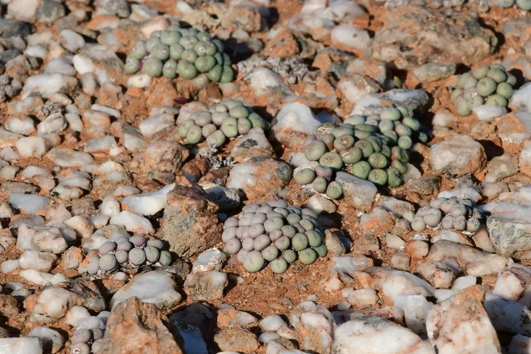

多肉植物 · 植物界
肉锥花 Conophytum minutum

番杏科肉锥花属多年生微型多肉，植株由两片肉质叶合生成锥形，秋季开粉紫色小花，是番杏科中的“小精灵”。
- 分类
- 门被子植物门纲木兰纲目石竹目科番杏科属肉锥花属
- 栖息环境
- 南非纳马夸兰的干旱砾石地，喜光、极耐旱、怕湿热
- 地理分布
- 原产南非纳马夸兰地区；中国各地多肉爱好者盆栽栽培
- 保护级别
- IUCN 暂无评估；野生种群受非法采挖与栖息地破坏影响
物种志
肉锥花为多年生微型肉质植物，株高仅 1–3 厘米，由两片对生的肉质叶合生而成，呈圆锥形或卵圆形，灰绿色至蓝绿色，表面常具深色斑点，顶部有裂缝。花从裂缝中抽出，粉紫色至紫红色，直径 1–2 厘米，花瓣细长，秋季开放；果实为蒴果，成熟时开裂散出细小种子。
本种原产南非纳马夸兰地区的干旱砾石地，喜阳光充足、通风良好、极端干燥的环境。它每年春季蜕去旧叶、长出新叶，夏季休眠，秋季开花，冬季生长，养护节奏与多数多肉不同。肉锥花株型微小、形态奇特，是番杏科爱好者追捧的“小精灵”；但耐性差，夏季浇水稍多就会腐烂，需用颗粒土并严格控水。
形态与习性
- 株高仅 1–3 厘米，两叶合生呈锥形
- 叶片灰绿色至蓝绿色，表面具深色斑点
- 花期秋季，花粉紫色至紫红色
- 光照喜光，夏季需遮阴
- 水分极耐旱，夏季休眠期严格控水
- 土壤以颗粒为主的透气基质
- 主要用途微型盆栽与番杏科收藏
趣味知识
- 肉锥花的“身体”其实是两片合生的肉质叶，顶部的裂缝才是它的生长点。
- 它每年春季会蜕去旧叶、长出新叶，蜕下的“皮”像一层半透明的壳。
- 肉锥花原产南非纳马夸兰，那里年降水量不足 200 毫米。
- 夏季是它的休眠期，此时浇水过多极易腐烂，是养护的关键难点。